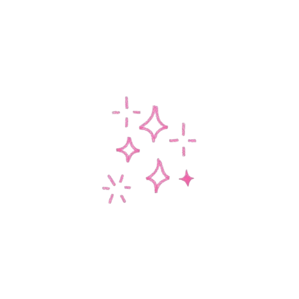
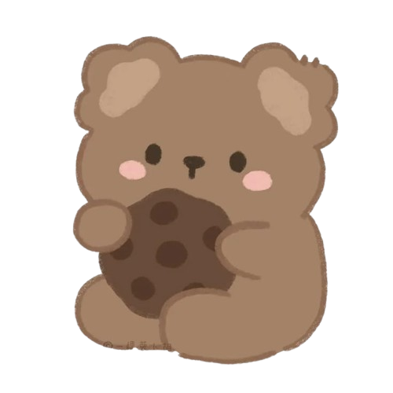
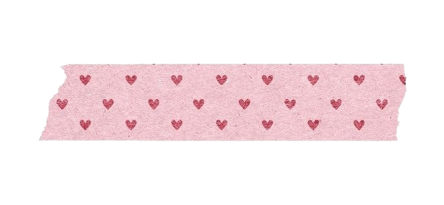
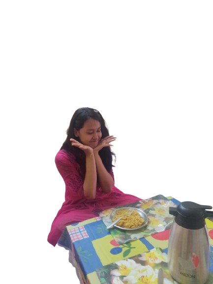
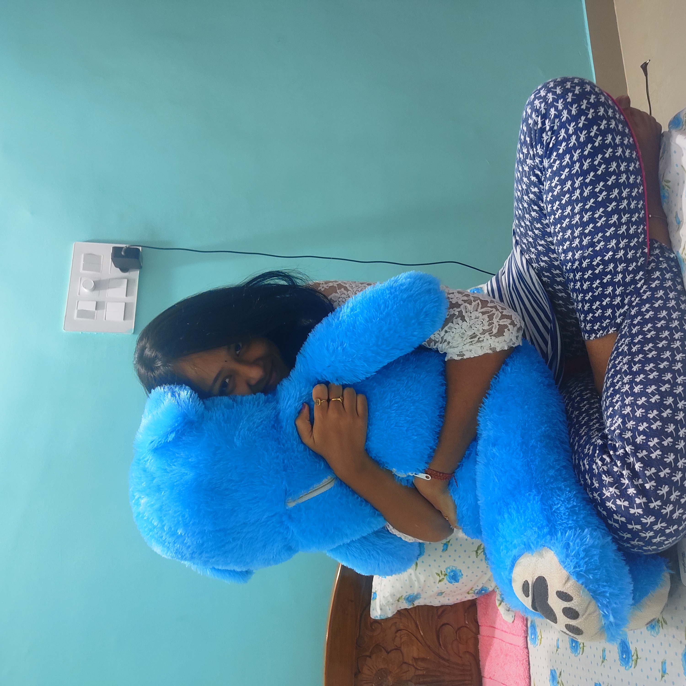
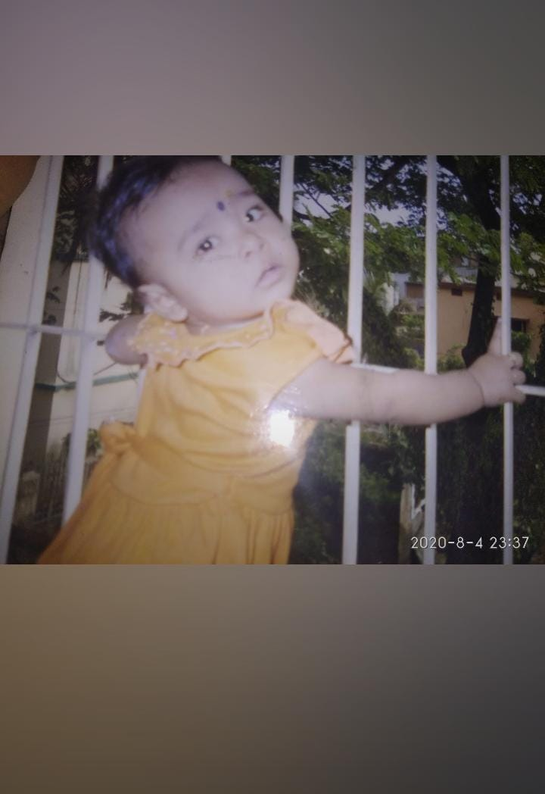
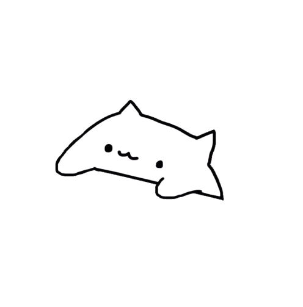

.png)


.png)
.png)
.png)
.png)
.png)
this is where i probably fell. ♡


my favorite smile ♡
at first,
you were just someone
i talked to.
just another conversation.
just another part
of my day.
and somehow,
before i even noticed,
you became
the part i looked forward to
the most.

“you knew i took this.
you just never knew i kept looking at it.
”
“still my favorite laugh.”

“little you would never believe how loved you became.”
Dear Aditti,
I maynot have ever called you with this name before and I don't think I will ever call you with this name (yeah because to me you will always be my meow).
Whatever I am going to say here now may feel a little overwhelming for some time, but yeah, I needed to get some things off my chest that have been in me for the last 3 years, from the way we stopped meeting regularly and talking regularly, starting from 18th of July 2023.
I still remember that time when you pranked me saying aunty read our chats on April 1st of 2023 (at that time I ofc did not know that it was a prank) and at that moment i saw whole my world getting destroyed in front of me, panicking and all but when i came back to bbsr at 14th of April, I saw you again on the stairs, wearing a white dress, and to my eyes, you were like pyase Registan ke musafir ko paani. Yeah, I was sad and then you ran downstairs just because you couldn't face me after seeing my utra hua chehera and then you texted me that all that were a prank and the amount of relief that i got that day.... i can't express those in words.
I still remember that conversation on 20th December 2022 too. When you asked me since when, I don't think I even had a proper answer. And when you asked me why I didn't tell you earlier, I said it was because I didn't want my studies getting affected the way they had before. And yeah, that was true. But if I'm being completely honest now, there was another reason too. You used to tell almost everything to aunty and my overthinking brain somehow convinced itself that if I told you how I felt, the whole world would know by the next day 😭. Looking back it sounds funny, but at that time it genuinely scared me. So I just kept quiet for a long time.
The last day you shifted the tears in your little eyes it crushed my heart and me from inside but alongside it gave me that feeling if the whole world was against me i felt you would be the only person standing besides me.
I don't fully understand Aditti what you have or had for me maybe its a bit complicated that we both couldn't understand at that time idk. You remembering my number (ofc me being the bhula mana guy who couldn't remember things ofc), you caring for me like a little baby would do, you checking upon me each and everyday and obv those scolding by you. I may never admit it but i used to love those affections, those care for me, those slap threats you used to give me (not me blushing rn) when i did something wrong, not eating on time, not eating properly, not obeying you (👉👈). I used to love those things and till date they are the best thing that happened to me....
TBVH, before it all went wrong i think i was the happiest i had ever been in life. Not because everything was perfect, not because i had everything i wanted, but for the first time i had something to look forward to everyday. The name on my screen could change my mood, a simple conversation made my day special. I wasn't counting the problems anymore, i was counting the moments. The good morning texts, the mo bus rides, the excitement of seeing your notification, the comfort of knowing someone was there.
And maybe that's why it hurts the most because when i think about what i miss, i don't think about the future i imagined or the things that never happened. I think about the version of me that smiled every time your name appeared on my screen, the version of me that slept peacefully knowing waking up tomorrow would be worth it. I think about how ordinary days somehow felt lighter, and how, without trying, you became a part of them.
And maybe that's why it hurts so much, meow. Slowly talking less, meeting less and becoming strangers after being so close hurt a lot more than i ever admitted. I was never angry at you. Most of the time i was just sad because after getting so used to your presence, i never really learned how to be okay with your absence.
And if there is one gift i could give you, it wouldn't be something expensive or grand. I think i would give you the chance to see yourself through my eyes, just for a moment so that you understand how special you were and are to me meow.
You would always tell me that i said such big things and made such big promises. The funny thing is, for someone who talked so much, i never managed to express the one thing that mattered most to me:
how deeply i loved you...
and still do meow.

after your coaching, any day you're free — just pick a day and i'll be there, meow ♡